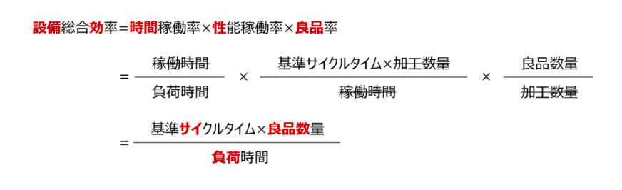
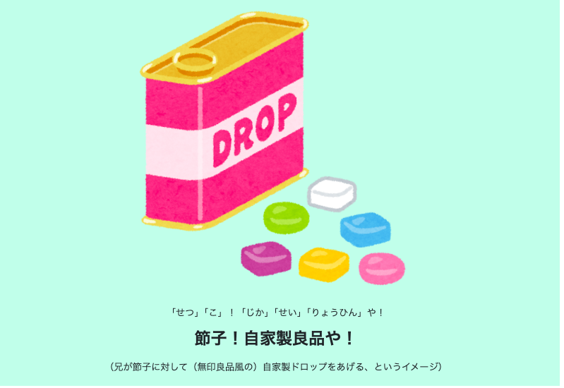
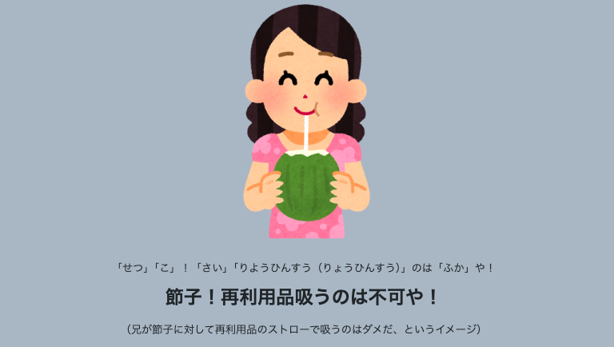
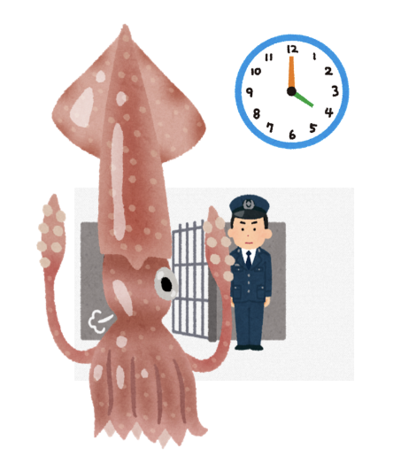
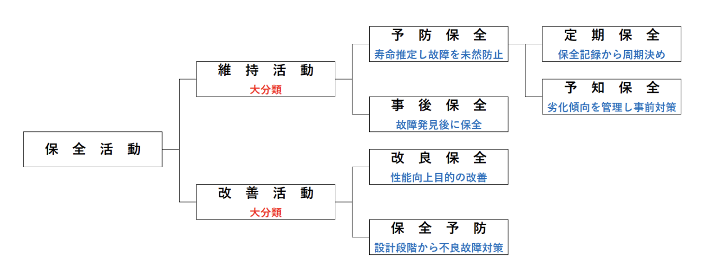

突然の故障で生産ストップ
修理費が高額
納期遅れでお客様に迷惑
故障が減り安定稼働
計画的に修理できる
コストダウン＆信頼UP
壊れる前に計画的にメンテ
🚗 車の定期点検
🦷 歯医者の定期健診
壊れてから修理する
🚗 パンクしてから交換
🦷 虫歯になってから治療
安く作れるか？
ちゃんと作れるか？
間に合うか？
Mean Time Between Failures
壊れるまでの
平均時間
長いほど良い
Mean Time To Repair
直すまでの
平均時間
短いほど良い
使える確率
MTBF/(MTBF+MTTR)
高いほど良い
設備総合効率（OEE：Overall Equipment Effectiveness）とは、設備の使用効率を総合的に測る管理指標です。
「止まっていないか？」「遅くないか？」「不良を出していないか？」という3つの視点を掛け合わせて、設備が本来の力をどれだけ発揮できているかを数値化します。
| 率 | 公式 | ポイント |
|---|---|---|
| 時間稼働率 | 稼働時間 / 負荷時間 ＝(負荷時間-停止ロス) / 負荷時間 |
停止ロス ＝ 故障・段取り・刃具交換・立上り |
| 性能稼働率 | 正味稼働時間 / 稼働時間 ＝基準CT × 加工数量 / 稼働時間 |
基準CT×加工数量の導出が超重要！ 試験で抜けやすい |
| 良品率 | 良品数量 / 加工数量 | 手直し品も「不良」に含む |



設備の故障率は人間の一生と同じパターンをたどります。
使い始め
故障率高い→下がる
設計・製造の問題
安定期
故障率一定（低い）
ランダムな故障
老朽化
故障率上がる
部品の劣化・摩耗


TPM（Total Productive Maintenance）＝保全部門だけでなく全員で設備を守る活動。
TPM（全員参加の生産保全）は8つの活動（8本柱）で構成されます。試験では特に赤字の3つが頻出！
オペレーターの保全力を段階的に高めていく流れ。
設備管理では3種類の時間が出てきます。名前が似ていますが役割が違います。
| 名前 | 何のこと？ | 日常の例え |
|---|---|---|
| 負荷時間 | 工場が動くべき全体の時間 | お店の営業時間 |
| 稼働時間 | 機械が実際に動いた時間 | レジが使えた時間 |
| 修理時間 | 故障で止まっていた時間 | レジが壊れて直すまでの時間 |
可用率の公式は直感的に理解できます。
バケツの水で考えると一発でわかります。
| 指標 | 意味 | 方向 | 測るもの |
|---|---|---|---|
| MTBF Mean Time Between Failures | 平均故障間隔 | 長いほど良い | 信頼性 |
| MTTR Mean Time To Repair | 平均修復時間 | 短いほど良い | 保全性 |
| 可用率 | 使える確率 | 高いほど良い | 可用性 |
| 故障強度率 | 停止時間の割合 | 低いほど良い | 信頼性 |
工場の設備は、理想的にはずっとフル稼働で良品だけを作り続けたい。しかし現実には止まる・遅くなる・不良が出るという3種類のロスが発生します。これを具体的に7つに分解して管理するのが「設備の7大ロス」です。
| 判断基準 | 自社生産 | 外注 |
|---|---|---|
| コスト | 自社の方が安い | 外注の方が安い |
| 品質 | 自社で品質確保できる | 外注先の方が高品質 |
| 技術 | コア技術（流出防止） | 非コア技術 |
| 生産能力 | 余力がある | 余力がない |
| 設備 | 設備がある | 設備投資が割に合わない |
このページに出てくる語呂合わせを一覧でまとめました。眺めて覚えよう！
語呂合わせのキーワードを穴埋めで確認！赤い空欄をクリックすると答えが見えます。